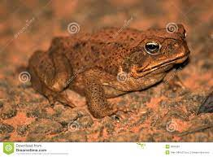
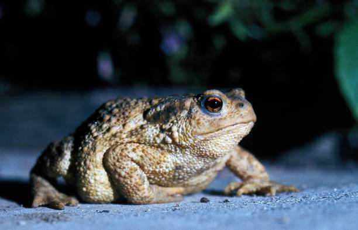
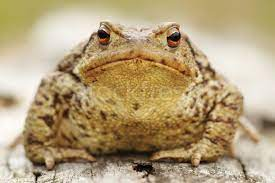

Top Toads Today

- Help I can't id this one
- Found in southern US
- Brown rough skin
- Found near mud

- Found this one on my walk
- Found in Colorado
- green skin
- Found on road

- Seems angry after i pet it
- is it toxic?